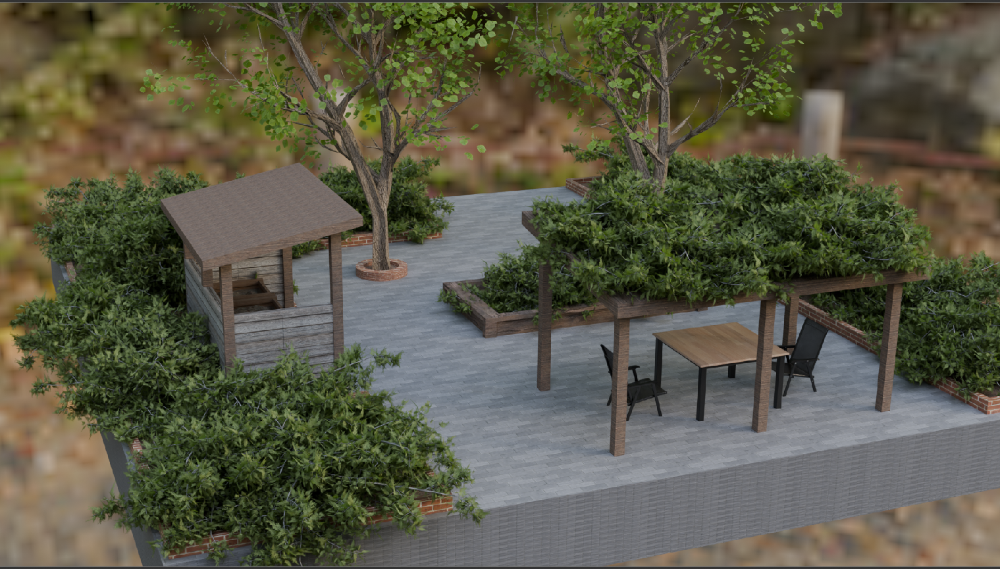

Week 9 Blog – Crit Session 2, Feedback, and Third-Cycle Refinement
The Experience
The focus of this week is entirely on Crit Session 2. Unlike previous weeks, there are no formal lectures this week; class time is primarily devoted to presenting refined projects, discussing experiments, and receiving feedback from tutors and peers.
In this critique, I presented the latest developments in the Eco Hub project. Compared to Crit Session 1, the project has undergone significant changes through multiple rounds of spatial modeling, iteration, and refinement.

My presentation focused on:
- refined project framing
- prototype development process
- lessons from Crit 1
- current experiment focus
- unresolved questions and next testing directions
I documented the progression of the Eco Hub prototype from rough spatial blockouts to more immersive rendered environments. The project evolved through:
- spatial blockout
- structural testing
- vegetation integration
- atmosphere refinement
- final rendering
Rather than presenting the project as a final architectural proposal, I framed the work as an ongoing design experiment exploring whether spatial intervention can encourage visible participation and environmental engagement.
The critique also focused heavily on what still needed testing. I asked for feedback about:
- realism
- interaction
- business participation
- scale
- user engagement
.jpg)
Reflection on Action
The most important feedback from Crit Session 2 was that the project framing had become much clearer compared to Crit Session 1. One of the comments noted that the direction now feels more understandable and could provide a stronger foundation for future development in DES304.
This is quite encouraging to me, because one of the biggest issues with Crit 1 was that the project was still too broad and conceptually unclear. The feedback we’ve received so far indicates that the new version is now better able to convey the project’s direction.
However, the critique also exposed several important weaknesses. The most prominent and frequently repeated piece of feedback is that this project still lacks interaction and visible participation. Many people have noted that, although the rendered space looks realistic and achievable, it feels more like an environment meant to be viewed rather than a space that truly encourages active engagement.
One comment specifically questioned how interaction could actually be tested through modelling alone, since the Blender prototype itself cannot physically “move” or simulate real behaviour. This made me realise that my current prototype still relies heavily on visual communication rather than behavioural testing.
Another repeated issue was that the project still lacks enough business-related specificity. Feedback suggested that I should research actual companies and understand:
- what problems businesses may want solved
- how participation could connect to company culture
- whether companies would realistically support this type of intervention
This was very important because it showed that the project is currently stronger spatially than institutionally.
Feedback also suggested that I should test:
- realistic site dimensions
- seating capacity
- tree spacing
- urban planning considerations
- planting selection
- possible locations such as unused parking spaces or underused commercial land
This shifted my thinking further toward realism and implementation rather than purely conceptual atmosphere.
Theory
Week 8 and Crit Session 2 reinforced an important idea:
The lecture repeatedly emphasised:
- refining reverse brief
- identifying assumptions
- defining what the project is NOT trying to solve
- using experiments to test uncertainty rather than simply producing outcomes
This directly connected to my critique feedback.
At first, I viewed Eco Hub primarily as a spatial concept that could visualize climate resilience. However, the critique made me realize that relying solely on the spatial atmosphere is not enough to demonstrate participation.
The project now needs:
- behavioural evidence
- institutional logic
- user engagement testing
- realistic implementation scenarios
The critique therefore shifted the project from "designing a space” toward “testing whether the space actually changes behavior." This became one of the most important conceptual shifts of the project so far.
Preparation
The next stage of the project needs to move beyond atmosphere and visual refinement into more realistic participation testing.
The feedback made it clear that the strongest next step is not adding more visual complexity, but understanding:
- how people interact
- why businesses would participate
- how the space functions practically
- whether the intervention creates measurable engagement
My next experiment cycle will therefore focus on:
- user behaviour
- business participation scenarios
- realistic scale testing
- interaction mapping
- environmental usability
- site-based research
I also want to begin investigating whether there are real commercial sites that could potentially support this type of intervention, such as unused parking spaces or underutilised urban areas.
The most important lesson from Crit Session 2 was understanding that: a realistic and visually resolved space does not automatically create meaningful participation. And the next stage of the project therefore needs to focus less on “how the space looks” and more on “how the space behaves.”